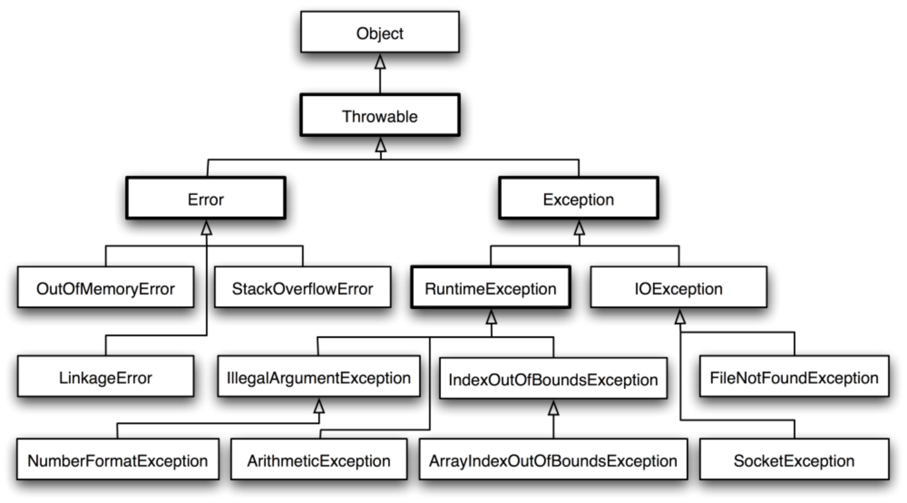
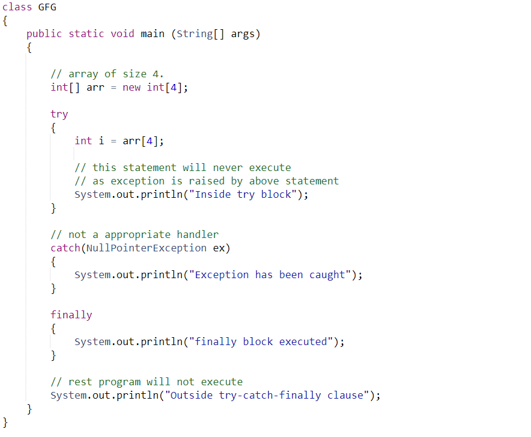
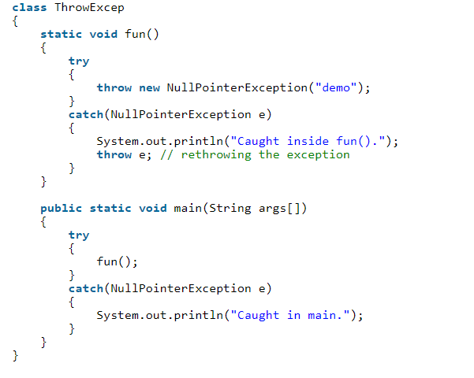
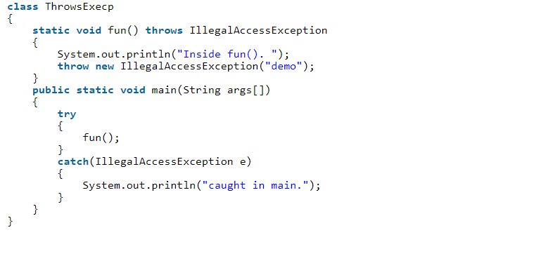

Errors Vs Exception
An Error indicates a serious problem that an application should not try
to catch. These are used by the Java run-time system (JVM) to indicate
erors errors in the run-time environment (JRE).
An Exception indicates conditions that an application might
try to catch. All exceptions and errors are sub classes of the Throwable
class.
Checked:
- Checked at compile time
- The method with sketchy code must handle
the exception or specify the exception using
the "throws" keyword.
- A try/catch block works as well
Unchecked:
- Not checked at compile time.
- A handler is not forced by the compiler
to handle/specify the exception.
- Checked at run-time.
Here is a visual of the exception heirarchy:

Handling an Exception
Whenever an exception occurs, an exception object is created and the method hands it off to the JVM. This object contains the name and a description of the exception as well as the current state of the program where the exception occured.
Creating the Exception Object and handing it to the run-time system is called "Throwing" an exception. The JVM will attempt to match the exception object to the type of the "handler." This code can be recognized by five keywords: try, catch, throw, throws, and finally. We will discuss these keywords later.
Try & Catch
A method catches an exception using a "try-catch" block. Your "risky" code (or code you believe will disrupt a program) goes in the try block. Your catch block defines how you want to handle the exception (i.e. returning a message to the user). The finally is a "catchall" block that will be always be excecuted.

Throws vs. Throw Keywords
If a method does not handle a checked exception, the method has to declare it using the throws keyword. Throws appears at the end of a method's signature.
An exception can be thrown using the throw keyword. This can apply to a newly instantiated exception or one that was just caught.
For example:
Throw

Throws

Throws is used to postpone the handling of a checked exception and throw is used to invoke an exception explicitly
This site is intended as a summary of Exceptions. Exceptions are difficult to understand, but it's okay.